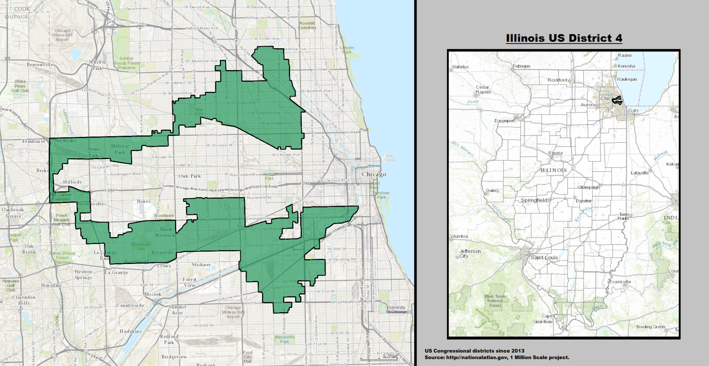

Overview of Redistricting and Gerrymandering
Reapportionment, Redistricting, and Gerrymandering, and can be confusing topics. Let this break it down for you.
In June 2018, MSNBC ran a special on gerrymandering. Former Attorney General Eric Holder, after his tenure in the Justice Department, launched a PAC directed specifically at targeting gerrymandering. The Supreme Court has heard arguments since the 1980s about racial and partisan gerrymanders, including three in its 2017-2018 term. Former California governor Arnold Schwarzenegger has devoted much of his time in and out of the governor's mansion to combatting gerrymandering. In this decade more than others, the spectre of gerrymandering has pervaded into our national consciousness and political discourse, warping our sense of what a fair election is and what we should expect from our congressional delegation.
But what exactly is gerrymandering? Where did it come from? How do we diagnose it and what fixes do we prescribe? These are all important questions, and this article will work through them in an attempt to demystify some of the complicated language and implications of gerrymandering and redistricting in the United States.
To begin, know that gerrymandering, in its worst form, is nothing short of an undemocratic practice that aims to undermine the very foundational principles of our republic. However, the popular discourse has blurred the line around what happens during "typical" redistricting and "irregular" redistricting, leading to claims of improper gerrymandering when the problem identified may not even be a problem at all.
The term "gerrymandering" comes from Massachusetts governor Elbridge Gerry (pronounced Gary, not Jerry) and his 1812 (largely successful) attempt to redraw the state's legislative districts to favor his Democratic-Republican party over the opposition Federalist Party. Contemporary commentators likened one of the new strangely shaped state senate districts to a salamander, portmanteau'd it with his last name "Gerry", and the term stuck. What stands out about the history of the term is that the first gerrymander shares two significant similarities with modern criticisms of gerrymandering - an irregular shape as indicative of an improper district, and designed for partisan advantage.

These concepts have pervaded into our national discussion and understanding of how gerrymandering works. This explainer video on YouTube encourages voters to check their district's shape - and if it's strange looking, to assume partisan gerrymandering. Or this video from Vox, which argues that the shape of the districts gives a clear indication that it's been gerrymandered. The Daily Show defines gerrymandering as when "the politicians choose their voters, the voters don't choose them." John Oliver claims that gerrymandering "creates unfair advantages for whoever happens to be drawing the lines."
Before we get into the merits of these claims, let's step back and review what exactly goes on during redistricting. Every 10 years, the United States is constitutionally required to conduct a census. In the modern day, the census is used to allocate resources (read: money) to the states and districts, but its primary purpose is to determine how many representatives each state will be apportioned.
The basic process is this: once the census has been completed and the population of each state determined, Congress apportions however many representatives it wants across the states. There are currently 435 representatives, a number established during the Reapportionment of 1911 and unchanged since. After determining how many representatives each state is accorded, it is up to the state governments to decide how they will elect their apportioned members. There is a litany of court cases, generalized values, and federal laws all governing this process, but because the Constitution grants each state the ability to choose "the Times, Places and Manner of holding Elections for Senators and Representatives," the process is largely left to the state governments. The only real requirements are that each district must be single member, equal in population, and cannot unfairly create racially packed districts.
For most of the country's history, that meant that the legislators themselves would draw the districts, both congressional and for state legislators (ie, themselves). In 1983, Washington state passed legislation creating the first independent commission to redistrict their state, and in 2015 the Supreme Court upheld voter approved commissions even over the objection of the legislature. However, these independent groups are the exception, not the rule - only six states use independent commissions for congressional redistricting.
So returning to the videos from before, the Daily Show's claim that gerrymandering is when "politicians choose their voters, voters don't choose them" is… misleading. For 88% of states, politicians do "choose their voters," but we don't usually hear that 88% of states are gerrymandered. Without a doubt, the process of representatives requesting certain cities, neighborhoods, or streets during redistricting is antithetical to the republican values upon which our country is founded, and such actions, when taken, should be rightfully criticised. However, there are other, better ways of identifying gerrymandering, and focusing on a constitutionally sanctioned practice is a bad direction for our efforts.
Indeed, some bizarrely drawn districts can even be indicative, conversely, of a positive version of gerrymandering. Take this map from Arizona, for example. To most people, it presents as a weird set of districts, with the 2nd district (colored blue) snaking a long tendril into the 1st district (colored black).

The districts are drawn this way specifically to keep the Hopi and Navajo Native American reservations in separate districts, the result of lobbying from the tribes themselves because of historic rivalries. When the Arizona District Court took it upon itself to redraw Arizona's congressional districts in 1990, the tribes successfully achieved their desired result, which was preserved in the 2000 redistricting by Arizona's independent commission. The reservations have since been merged into a singular district, but again, because of lobbying from the tribes themselves. This involvement of ethnic, racial, linguistic minorities in deciding how they want to be represented should be encouraged and celebrated, not condemned because of the odd shape it created.
Similarly, consider Illinois' 4th congressional district. Commonly known derisively as the "earmuff" district, this district features frequently in news clips about gerrymandering (it appears in both John Oliver and The Daily Show's clips above, although from clips from CNN and NBC).

And again, this is a district that, although looking strange, exists for a valid reason. This district, first created in 1991 by court order, unites two heavily Latinx neighborhoods, while leaving the intervening Black neighborhood in its own district. The ability for these two different populations, while still minority communities, to be represented uniquely for their own interests is again something to be encouraged despite the strange shape.
The most valid criticism of gerrymandering stems from a particular outrage - voter suppression -- and can be achieved easily through gerrymandering. There are two main types of gerrymandering in the United States - racial and partisan. Racial gerrymandering is still prevalent although slightly less common, largely because of a series of Supreme Court cases in the 1990s that require redistricters to take race into account enough to create racially dominate groups if prudent, but not so much as to pack all of a minority group into a singular district if they can avoid it (confusing, right? The Shaw line of cases is not straightforward). Ultimately, the Court has said that minority-majority districts are okay, as long as the group is localized and the district wasn't drawn at the expense of other values like compactness or contiguity. The recent Supreme Court ruling in Abbott v. Perez and the direction it shows the Court moving, however, indicate that racial gerrymandering may make a strong judicially sanctioned comeback.
Partisan gerrymandering, however, is still very much in vogue. Because the Court has never decided on a manageable standard for identifying and striking down partisan gerrymandering, there is no enforceable prohibition against it. Further complication matters, redistricting is a process that in the best of situations is governed by competing value judgements. Redistricting bodies must balance the (often mutually exclusive) choices of compactness, competitiveness, proportionality of the result, enhancing minority participation through minority-majority districts, contiguity, preservation of communities of interest, and maintenance of political subdivisions like counties or towns.
These values, combined with the constitutional requirement of "one person, one vote," has also in recent decades lead to the rise of oddly shaped districts. Prior to the litany of Supreme Court decisions in the 1960s requiring equally populated districts, congressional representatives were often elected from counties or municipalities groups together. Following that revolution, and coupled with advances in computer software, there has been a significant rise in districts grouped by census tract, the smallest territorial area designated by the census.
Collectively, these factors and histories result in a tangled web of laws, values, common law, and disagreements that makes discussing gerrymandering difficult. Redistricting in general is a difficult process to accomplish in a fair and neutral way, and is easy to be perverted by politicians motivated by incumbency, partisan rivalry, and overt racism. Change, let alone positive progressive change, has never come easily in American politics. But with the microscope increasingly focused on inappropriate redistricting, a clearer future is possible.